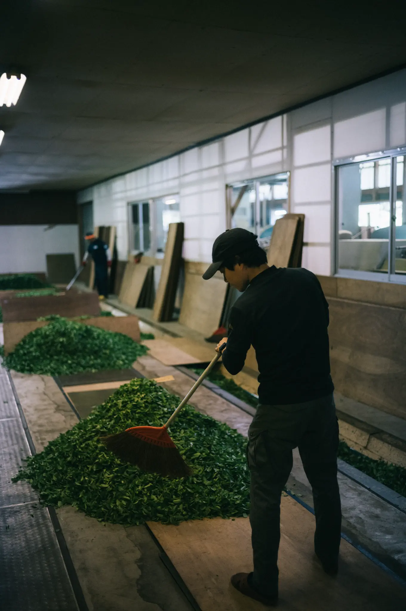

若き継承者の帰郷

彼の名前は「HIROKI MAGARI」——曲風園を継ぐ3代目。生まれた時から身近にあったお茶作り。5月に入れば新茶作りに追われ、学生時代は毎日手伝いをしていた。正直に言えば、当時は大変さが身に染みて嫌でたまらなかった。一度故郷を離れ、車関係の仕事に就いていたし、親も「継がなくても良い」と言ってくれていた。しかし23歳のとき彼は家業を継ぐために故郷に帰ります。「お茶の本当の味を知るには、味覚と嗅覚が最も鋭い若いうちに鍛えておくべきだ」と考えたのです。
生き残るための『新しい試み』、茶葉の生命を活かしきる和紅茶

帰ってきてからの数年は、慣れない生活と1年かけて山と向き合う仕事に、伝統を守ることの大変さを実感しました。ですが彼は「新しいことをしなきゃ生き残れない。挑戦してこそ、文化を未来へ繋ぐ意味がある。」と古いやり方を守るだけでなく、茶葉の生命を100%活かしきる「新しい試み」に挑戦します。春の一番茶を煎茶にした後、少し肥料分の抜けた夏の二番茶を使い、葉を優しく萎れさせ、じっくりと揉み込んで酸化させる伝統的な手法で、極上の「大歩危和紅茶」を完成させたのです。
クラフトマンシップの継承

HIROKI MAGARIは言わばお茶のソムリエです。産地や品種、味を見極める最高峰の国家段位「茶審査技術 九段位」および「日本茶インストラクター」を所有しています。親から子へ受け継がれた職人の血に、確かな目利きの力と現代の革新的なマーケティングを掛け合わせる。今ではお茶で地域を呼び戻すイベントや、絶景の茶畑でわざわざお茶を飲むための集客にも挑戦しています。日本の秘境でひっそりと継承されたクラフトマンシップの芽は、しっかりと芽吹き、今では日本中にその土壌を広げています。